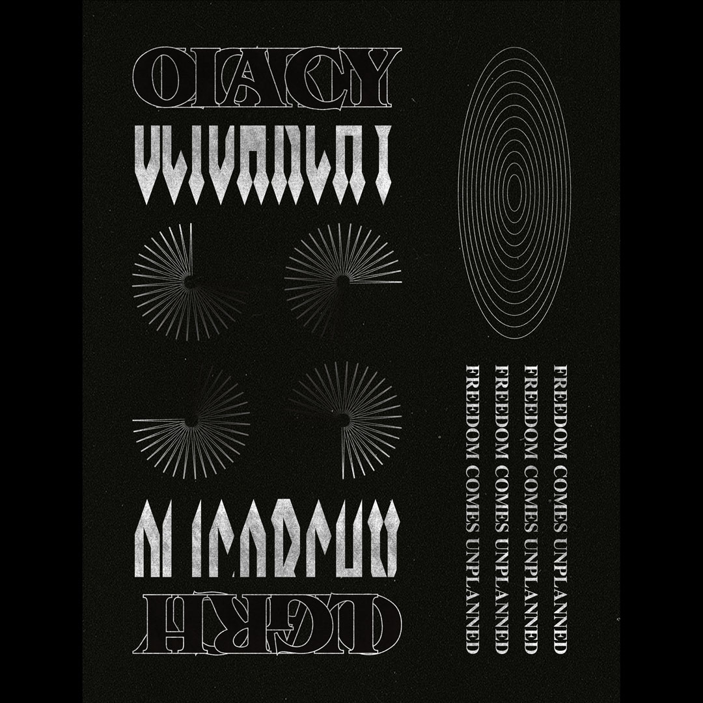

FILM
THESIS STATEMENT
The OLIGARCHY thesis is two-legged.
The first leg speaks to people in "The Bubble" — the people who leverage all the opportunities of the school to thrive in traditional business careers. Educating people about the harmful social environment makes them more aware of their actions, which can reduce gossip and encourage responsible use of the grapevine.
The second leg speaks to people who seem to have escaped "The Bubble" — the people who have either left the program or have begun pursuing different career paths. These people tend to be categorized as "Anti-Commerce" and can be a bubble in itself. However, we must make this group aware of the many transferrable skills that are picked up in business school that can be applied to other working disciplines such as teamwork, communication and organization. These skills take lots of experience and time to develop, and are a huge selling point for staying in a business program.
I do not want to create an "Us vs. Them" scenario. Instead, I think that by acknowledging the different types of people in the program we can unite both communities to create high-functioning organizations and student groups that can help each other pursue their dreams.
ON THE FILM
Thank you again to everyone who has reached out to me with feedback, criticism, and intention to collaborate.
First and foremost, I do not want to convince people to avoid pursuing careers in business or to stop going to business school. There is nothing wrong with being in the rat race — we all must find a means to guide us through life. Without people knowledgeable in accounting, finance, marketing, and consulting, companies would have a much harder time coordinating financial and strategic direction in their activities. Division of labour makes the work of businesspeople very necessary to keep organizations afloat.
The purpose of my project is also not to change the structure of business schools or even suggest a redesign of hierarchies and society in general. Everything in life will always be analogous to an oligarchy. A small group of people will always be idolized and have a disproportionate amount of power compared to the rest. We must acknowledge and internalize this.
Reading Albert Camus’ The Myth of Sisyphus helped me realize that although some of us struggle through business school and become engulfed by the tense and competitive atmosphere, there are many things we can come to appreciate over time. We hustle and pave our own path with the help of our friends. Business students go through internal and interpersonal hardships that make us better than ever, with some of the strongest written and verbal communication skills of any working discipline.
"The struggle towards the heights is enough to fill a person’s heart."
THE ROADMAP
In the coming weeks and months there is a lot we need to get done.
The Magazine is almost finished and physical copies will be printed. I’m also making stickers and posters. All of these will be distributed at cost to those interested.
I will be co-hosting a pop-up gallery and art installation at the Tett Centre for Creativity and Learning in March.
COLLABORATION
Nothing great is created alone. I want to make OLIGARCHY a collaborative art and design project that I can pass forward when I leave school.
I want to start a podcast/radio show that can be broadcasted via CFRC Radio on campus and on SoundCloud. This can be a way for people to pose questions, ideas, contrarian opinions, start discussion, or simply to play tracks and display their taste for music.
I will also start a publication to give all commerce students a platform to write openly about their inner thoughts. Many of us write about our experiences in the program and only share it with a select few friends. The publication will serve as a gateway for people to start sharing their writing and can lead to a future where we can talk about our commerce-related problems publicly. It will be titled PUBLIC FORUM.
If any of this interests you please contact me via Instagram (@ericlchen) or Facebook. I am open to new ideas and want to hear everything you have to say.
LOVE,
ERIC